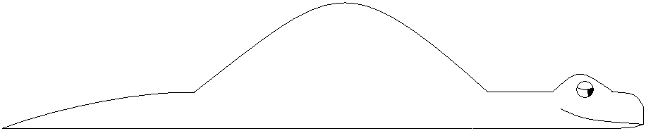

ИТ-Проекты • Глава 2
Тройственное ограничение
Золотое правило ПМ-а: вы не можете изменить одну сторону треугольника, не затронув остальные.
Любое изменение в Scope неизбежно тянет за собой Time или Cost.
9 областей знаний (Инструменты ПМ-а)
1. Содержание (Scope)
Определение и контроль того, что входит в проект, а что — нет.
2. Сроки (Time)
Управление расписанием и вехами.
3. Стоимость (Cost)
Бюджетирование и контроль затрат.
4. Качество (Quality)
Обеспечение соответствия результата требованиям.
5. Человеческие ресурсы (HR)
Формирование команды и распределение ролей.
6. Коммуникации (Comm)
Сбор, хранение и распространение информации.
7. Риски (Risk)
Идентификация, анализ и реагирование на неопределенность.
8. Поставки (Procurement)
Работа с подрядчиками и закупками.
9. Интеграция (Integration)
Связывание всех процессов в единое целое.
Жизненный цикл проекта («Удав»)

Авторская схема Ивана Селиховкина: Инициация, Планирование, Выполнение, Контроль и Закрытие.
Важно: Инициация — это не просто «начало», это момент официального признания проекта Спонсором.